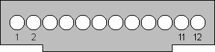

|

|
(Bild gesehen auf die Lötseite des Steckers, so, wie er im
Betrieb im Handy steckt, die Tastatur ist also oben)
Die Belegung trifft zu auf die folgenden Telefone: C25, C28, S25,
C35, M35, S35i, A35, A36, A40, SL42/45, ME45, C45, S45, S45i,
M50, MT50, A50, Gigaset4xxx |
| |
| Pin |
Name |
Funktion |
sonstiges |
in / out |
| 1 |
GND |
Masse |
|
|
| 2 |
SB |
Erkennung/Steuerung Ladegerät |
LOW = 150mA-Ladegerät
HIGH = 1A-Ladegerät
NC = 400mA-Lader bei 35/45 |
in / out |
| |
AUD01 |
SL45: Audiokanal 1 |
|
out |
| 3 |
CHARGE |
Ladespannung/strom |
U = 6,1V - 8,0V |
in |
| 4 |
BATT |
Spannungsversorgung für Zubehör |
U = 3,0V - 3,9V
Umin = 2,6V
Imax = 100mA |
out |
| 5 |
DATA OUT |
Daten abgehend |
PullUp im Telefon |
out |
| 6 |
DATA IN |
Daten ankommend |
PullDown im Endgerät |
in |
| 7 |
Z_CLK |
Taktleitung für Zubehörbus |
|
|
| 8 |
Z_DATA |
Datenleitung für Zubehörbus |
|
|
| |
DATA CTS |
CTS |
nur im Datenbetrieb |
|
| 9 |
MICG |
GND für Mikrofon |
|
|
| 10 |
MIC |
Mikrofon |
U = 1,5Vpp |
in |
| 11 |
AUD |
Lautsprecher |
U = 1,5Vpp |
out |
| |
AUD02 |
SL45: Audiokanal 2 |
|
|
| |
AUDG |
4xxx: GND für Lautsprecher |
|
|
| 12 |
AUDG |
GND für Lautsprecher |
|
|
| |
AUD |
4xxx: Lautsprecher/DC-Offset |
Signal ist nicht ausgekoppelt! |
|
|
| |
- S45 : Im Gegensatz zum S25 und den X35 darf beim S45
im Headsetbetrieb Pin9 nicht mit Pin12 verbunden sein. Das
Headset scheint sonst nicht oder nur eingeschränkt zu
funktionieren.
- C25 : Das C25 ist nicht datenfähig und kann
AT-Kommandos nur mit spezieller Software beantworten
- PC-Anschluss : Zum Anschluss der Datenleitungen an
einen PC muss in jedem Fall ein Pegelwandler verwendet
werden. Etwa der hier.
Um auch den Worst-Case-Fall sauber abzudecken, solle der
LOW-Pegel auf den Logikleitungen nicht über 200mV liegen, HIGH
sollte besser als 2V sein
- Ladegerät : Das Telefon erkennt am Pegel an Pin 2 das
angeschlossene Ladegerät und steuert dieses gegebenenfalls über ein
PCM-Signal am gleichen Pin. Die Eingangsimpedanz des Steuerpins muß im
Ladegerät mindestens 470kOhm betragen. Offenbar kann bei den 35/45ern
Pin2 offen bleiben, an Pin3 sollten dann mind. 300mA geliefert werden
können. Allerdings wurden auch schon Ladegeräte gesichtet, bei denen Pin
2 direkt mit Pin 1 verbunden ist.
- Zubehörerkennung : Zubehör wird über verschiedene
Zustände an den Pins 7 und 8 erkannt, der Standardzustand dieser
Pins ist HIGH/HIGH. Das Headset identifiziert sich
beispielsweise durch Pin7 HIGH, Pin8 LOW, also einer Brücke von
Pin8 nach GND. Beim C25 genügt eine Brücke von Pin8 nach Pin12,
was beim S35 nicht funktioniert, hier wird die Brücke von Pin8
nach Pin1 benötigt. Dauerlicht bei eingestecktem Headset lässt sich auf
diese Art übrigens nicht realisieren. Der Widerstand solle zwischen
470R und 1K liegen.
- PTT-Taste : Die PTT-Taste (Push-To-Talk,
funktioniert nur ab den 35ern) verbindet im gedrückten Zustand Pin7 mit
Pin9
- Gigaset4xxx : Ein Headset benötigt eine Brücke von
Pin8 nach Pin9. Die gemeinsame Masse von Mikro und Lautsprecher
ist Pin9, das Audiosignal muss über einen ElKo ausgekoppelt
werden, 4u7 bis 22u sind OK, also Pin12 an ElKo +Pol,
Headset-Lautsprecher an ElKo -Pol. Die PTT-Taste funktioniert
wie oben beschrieben.
- Dauerstrom an Pin4 : falls an Pin4 nur gepulste
Spannung ankommt: das Telefon muss in den Headset-Mode versetzt werden.
Siehe Zubehörerkennung.
Eine Bauanleitung für ein Audiokabel fürs SL42/45 gibts hier. |